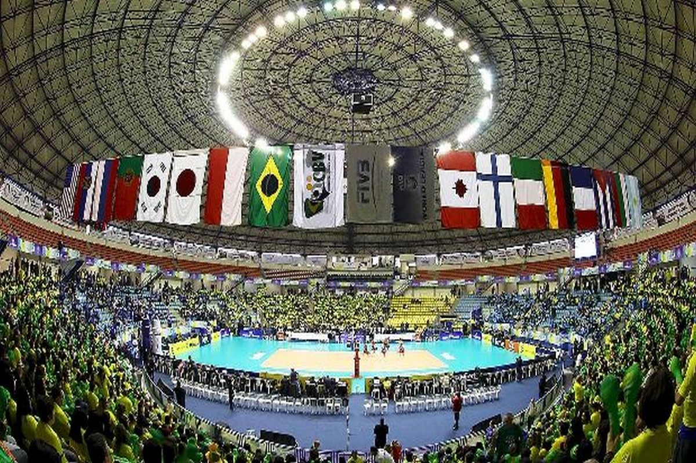
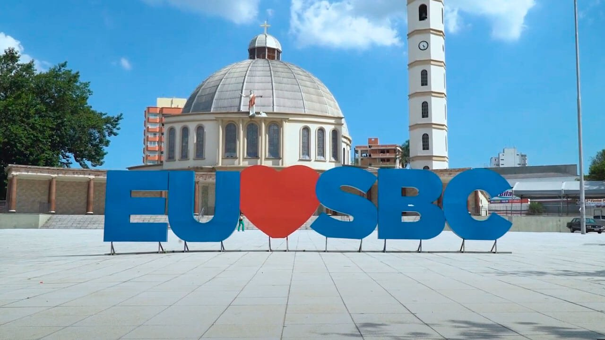
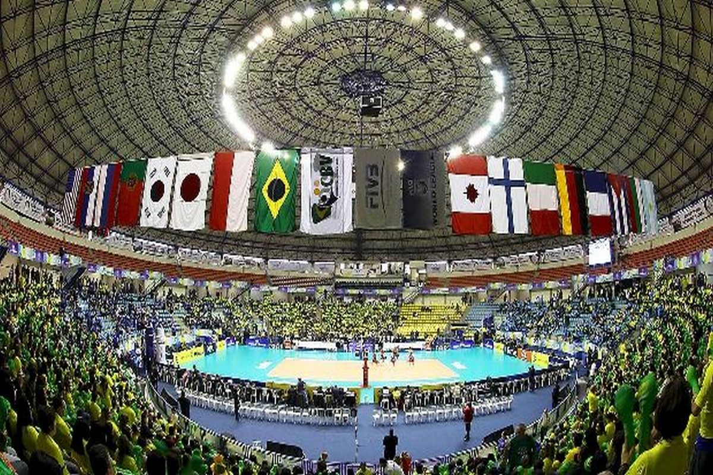
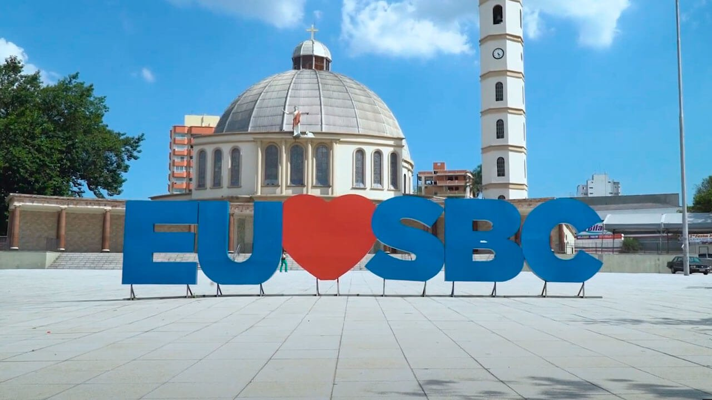
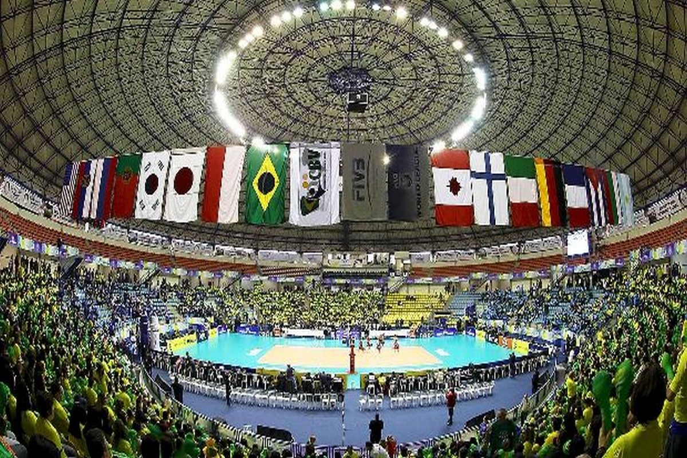
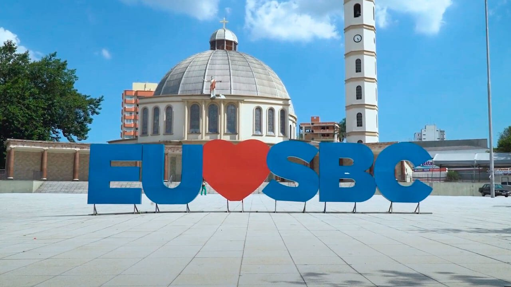
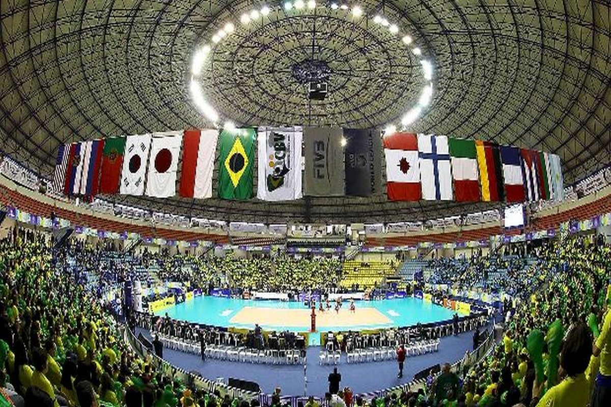
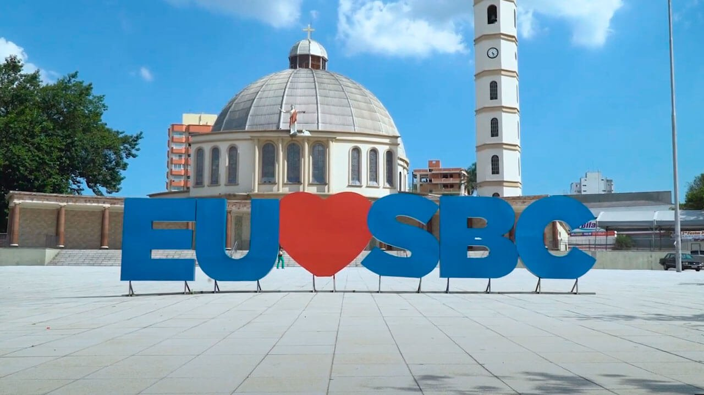

 



O município de São Bernardo do Campo nasceu na Borda do Campo, mesma região onde existiu a histórica Villa de Santo André da Borda do Campo (1550-1560). (Oficialmente São Bernardo do Campo reporta-se à chamada “Villa” de João Ramalho (1553) para comemorar seu aniversário de fundação, mas estudos revelam que o município tem origem bem mais recente, visto que o primitivo povoado sem deixar vestígios).
A Cidade da Criança é um parque de diversões brasileiro localizado no centro da cidade de São Bernardo do Campo, na região metropolitana de São Paulo, atrás dos antigos estúdios da Companhia Cinematográfica Vera Cruz.É o primeiro parque temático do Brasil e da América Latina, a tendo sido um empreendimento bastante ousado para a época e que atraiu muitos turistas para o município. Foi aberto em 10 de outubro de 1968.
A Paróquia Santíssima Virgem é uma das mais atuantes do grande ABC, dispondo em sua estrutura de diversas pastorais, grupos, movimentos e associações religiosas, onde os leigos encontram espaço para desenvolver suas atividades religiosas e sociais. Quando se entregam aos trabalhos de evangelização e assistência social aos mais necessitados, descobrem no pároco, padre Renato Souto, uma fonte permanente de apoio e incentivo para desempenharem suas funções religiosas e sociais, assim como crescerem na sua caminhada de vida e de fé cristã.
Parque Raphael Lazzuri,o parque que ocupa uma área de 25.000 m², tem um relevo pouco acidentado, sendo que as árvores já formadas fazem parte do antigo viveiro de plantas. O projeto de sua criação buscou estruturar os espaços de forma que eles pudessem se interligar, adaptando a inclinação do terreno, com um programa bem definido onde contemplação, esportes, educação, recreação infantil e eventos culturais, se desenvolvem com elementos como a vegetação, o curso d’água e uma parede de pedra formando cascata, proporcionando uma grande variedade de cenários.
| Nome do prefeito | Ano eleito | Partido | |
|---|---|---|---|
| Orlando Morando | 1º de janeiro de 2021 | PSDB | Atual |
| Orlando Morando | 1º de janeiro de 2017 | PSBD | |
| Luiz Marinho | 1º de janeiro de 2013 | PT | |
| Luiz Marinho | 1º de janeiro de 2009 | PT |
| Dados tecnicos baseados em 6 pontos , sendo eles Populaçao, trabalho e rendimento, educação, economia, saúde, território e ambiente | ||
|---|---|---|
| POPULAÇÃO | População estimada [2021] | 849.874 pessoas |
| TRABALHO E RENDIMENTO | Salário médio mensal dos trabalhadores formais | 3,7 salários mínimos |
| EDUCAÇÃO | Matrículas no ensino fundamental | 99.158matrículas |
| ECONOMIA | PIB per capita | R$ 60.871,06 |
| SAÚDE | Mortalidade Infantil | 9,61 óbitos por mil nascidos vivos |
| TERRITÓRIO E AMBIENTE | Área da unidade territorial | 409,532km² |
Todos os dados usados na tabela sao fornecidos pelo IBGE : Site do IBGE